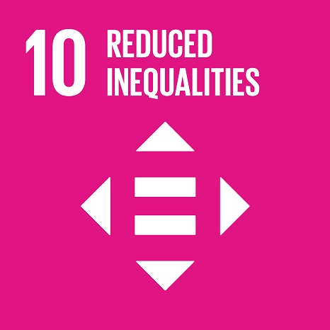
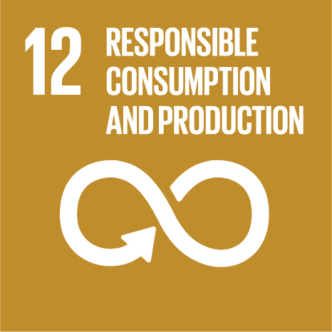
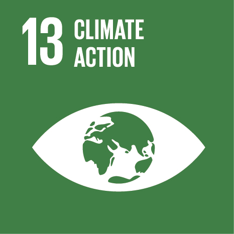

A fixed point in changing waters.
Every consequential decision is made in the dark. The market shifts, the numbers argue with each other, and the people you trust most tell you three different things. What you need in that hour is not another opinion. You need a fixed point. Manara is the Arabic word for lighthouse, and it is the whole of our philosophy: a lighthouse never chases the ship, never shouts, never claims the harbour as its own. It stands still, it burns clearly, and it lets the captain find the way. For more than a decade we have held that light steady for founders redrawing their companies, for executives stepping into rooms they have not yet earned, and for scholars defending work that will outlive them. We do not take the wheel. We make the coast legible, so the hand already on it can steer with certainty.


Our story & experience
We began in Beirut, a city that teaches you very quickly what advice is worth when the ground moves. There were no slide decks in those first years, only a handful of founders, a table, and questions that would not wait until Monday. Ten years on, the table is larger and the questions are harder. We have walked family businesses through the succession no one wanted to name aloud. We have taken startups into markets that had every reason to refuse them. We have prepared executives for interviews that decided a decade, and we have sat with scholars at two in the morning, the week before a defence, until the argument finally held.
Today the work reaches Lebanon, the United Kingdom, the United States, Canada and Dubai. We keep our roots deliberately local, because a market is not a dataset. It is a set of relationships, histories and unwritten rules that no consultant flown in for the quarter will ever read correctly. What travels is the standard, not the script. Every engagement is handled in confidence. Every recommendation we put in front of you is one we would act on with our own capital, our own reputation, our own name.
"A lighthouse never chases the ship. It stays still, burns clearly, and lets the captain find the way."
Our mottoWhat guides us
Vision
To be the name that comes to mind at the hardest hour. Not the loudest firm in the region, nor the largest. The one a founder calls at midnight, the one a board trusts with the question it has not asked publicly, the one a scholar credits in the acknowledgements. Trust is the only market share worth holding.
Mission
To turn complexity into a decision you can defend. We do the arithmetic before we offer the opinion, we say the inconvenient thing while it is still cheap to hear, and we stay until the plan survives contact with reality. Advice that ends at the recommendation is not advice. It is commentary.
Values
Discretion, precision, and the courage to disagree with the person paying us. We take on fewer engagements than we are offered, because attention does not scale and pretending otherwise is how good counsel dies. A thousand refusals for every yes. Then we own the outcome of that yes entirely.
What we do
Eight practices, one standard of care. Each links to its own page.
Business Consulting
Growth, positioning, expansion and restructuring for established companies.
Explore →Sustainability & responsibility
A lighthouse serves the whole coast, not one ship. We hold ourselves to that same standard. The advice has to outlast us, and the practice has to give back more than it takes.

Lasting value
We favour durable strategy over quick wins. What we build, our clients can run long after our engagement ends.
Low-footprint delivery
Remote-first, paperless engagements and digital-first tools keep our operating footprint deliberately light.
Knowledge that gives back
We mentor emerging scholars and share practical guidance through our blog, widening access to good counsel.
Ethical practice
Strict confidentiality, honest scoping, NDAs on request. We only ever recommend what we would do ourselves.
Our alignment with the 2030 Agenda
Manara's work maps directly onto the United Nations 2030 Agenda for Sustainable Development. We do not treat the Sustainable Development Goals as a badge to display; we treat them as a standard for the kind of house we want to be. These are the nine goals our advisory, legal, education and content practices actively advance — and the concrete way each one shows up in the work.







The Sustainable Development Goal icons are the property of the United Nations and are shown to indicate the goals Manara actively supports.
Let's find your bearings.
Every engagement begins with a conversation. Tell us where you're headed and we'll help you chart the course.